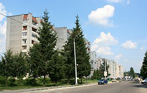

Місто Новояворівськ
Новояворівськ-місто районного значення у Яворівському районі ЛьвівськоЇ області. Розташоване на висоті 300 м над рівнем моря на межі Розточчя і НадсянськоЇ низовини у
верхівях річки Шкло-за 14 км на схід від районного центру Яворів і за 30 км на захід від обласного центру Львів. Сьогодні - найбільше у Яворівському районі і 7-ме за ліком у
Львівській області місто з населенням більше 30.тис осіб до ЛьвівськоЇ агломераціЇ.
Зображення міста

Прапор

Назви
Засновано в 1965 році як селище "Янтарне" (Від слова янтар,бурштин); перейменоване у 1969 році у селище "Новояворівськ">; 20 січня 1986 року отримано статус міста
"Новояворівськ"; 3 червня 2008 року перейменовано у місто "Новояворівськ" ,Назва "Новояворівськ" розшифровується як "Новий Яворів".Залізнична станція у Новояворівську ще з
часів заснування до сьогодні носить назву "Янтарна".
Основні промислові підприємства:
- ТзОВ "Енергія-Новояворівськ"
- ТзОВ"Йоха-УкраЇна"
Фабрика "Євростекстиль"- "Фабрика Євростиль"
- ТОВ "Бейкер-УкраЇна"